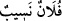

tekrar diriltmeyeceğini sanmışlardı. Doğrusu biz (cinler), göğü yokladık, fakat onu
sert bekçilerle, alev huzmeleriyle doldurulmuş bulduk. Halbuki, (daha önce) biz
onun bazı kısımlarında (haber) dinlemek için oturacak yerler (bulup) oturuyorduk;
fakat şimdi kim dinlemek isterse, kendisini gözetleyen bir alev huzmesi buluyor.
Bilmiyoruz, yeryüzündekilere kötülük mü murat edildi, yoksa Rableri onlara bir
hayır mı diledi? Gerçekten biz, -kimimiz sâlih kişiler, kimimiz ise bunlardan
aşağıda olmak üzere- türlü türlü yollar tutmuştuk. (Artık) şu gerçeği şüphesiz
anladık ki, biz yeryüzünde bulunsak da Allah’ı âciz bırakamayacağız, başka yere
kaçmakla da elinden kurtulamayacağız. Doğrusu biz, o hidâyeti (Kur’an’ı) işitince
ona iman ettik. Kim Rabbine iman ederse, artık ne bir (ecrinin) eksikliğe
uğratılmasından ne de haksızlık edilmesinden korkar. İçimizde, (Allah’a)
teslimiyet gösterenler de var, hak yoldan sapanlar da var...” (el-Cin 72/1-14)
Neseb ve nispet ana baba cihetinden ortaklıktır. Bu da iki nevidir: Birincisi dikey ve
doğru nispet ve ortaklıktır. Bu babalar ve oğullar arasındaki nispet ve ortaklıktır.
İkincisi yatay nispet ve ortaklıktır ki bu da kardeşler ve amcaoğulları arasında olur. “ denilir ki onun yakınıdır demektir.
Mana şöyledir: Müşrikler söyledikleriyle Allah ile melekler arasında bir nispet ve
ortaklık kurmuşlar ve bu şekilde Allah ile melekler arasında bir cinsiyet ispat
etmişlerdir. Allah Teâlâ’nın burada meleklerden “cinnet” olarak bahsetmesinde şuna
işaret vardır: Gizlilik sıfatı -ki bu cisimlerin nitelikleridir- cisim olmayanlara bu tür
sıfatları yakıştırmak uygun olmaz. Yine burada insanın cinnet getirmiş olduğuna ve şayet
insan Allah Teâlâ’nın zâtını ve sıfatlarını anlamak konusunda kendi haline bırakılsa bile
insan akıl ve idrakinin Allah Teâlâ’nın ahadiyet kemalini ve samediyet celalini
anlamaktan kâsır ve noksan olduğuna işaret edilmektedir. İşte insan bu durumda Allah
Teâlâ’nın zâtını kendi zâtına Allah Teâlâ’nın sıfatlarını kendi sıfatlarına kıyas ederek
kendi nesebi olduğu gibi Allah’a da nesep ispat eder. Kendi eş ve çocukları olduğu gibi
Allah’a da eş ve çocuklar isnat eder. Yine insan kendi organları gibi Allah’a da
organlar ve mekan ispat eder. Zâlimlerin bu tür isnat, ispat ve sözlerinden Allah Teâlâ
pek yüce ve münezzehtir. Allah Teâlâ şöyle buyuruyor: “... O’nun benzeri hiçbir şey
yoktur. O işitendir, görendir.” (eş-Şura 42/11)
Cümle âlem onun ilâhlığında müttefiktir
Ahmaklar O’nun hakîkatinin künhüne nasıl vâkıf olur
Beşer O’nun celâlinin mâverâsını bulamaz
Göz O’nun kemâlinin nihâyetine erişemez
Ne O’nun zâtının künhüne idrâk ulaşır
Ne O’nun sıfatının nûruna senin fikrin erişir
Sonra Allah Teâlâ’nın “Allah ile cinler arasında da bir soy birliği uydurdular...”